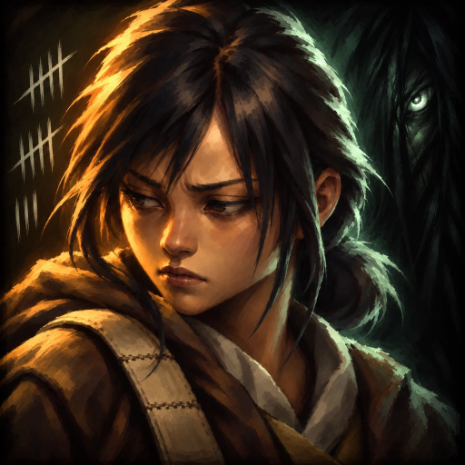

The kit
- P
Straws
Each instance of damage Mei takes from an enemy champion adds one Straw (max 15), tallied above her head for both teams. Each Straw grants +1.5% total damage dealt. Any single source grants at most 1 Straw per second; after 8s without champion damage, marks fade one per second. At 12 Straws she becomes THE HAUNTING: +15% move speed, Flinch loses its gate, attack reach 200 to 300, stacks drain 1/s and champion hits restore 1. The haunting holds while any Straw remains.
- Q
Bag Swing
Mei swings the satchel in a 225-unit arc for physical damage. That's it.
- W
Take It
Instantly cover up for 2s (+0.1s per rank): incoming damage is reduced 45%, and every hit taken during the window grants +1 extra Straw. No shield, no root - she can walk while enduring.
- E
Flinch
Castable only within 2.5s of taking champion damage (ungated while THE HAUNTING holds): Mei skips 250 units in the aimed direction, instantly.
- R
Enough.
Mei finally raises her voice: a 375-radius burst dealing physical damage +10% per Straw. Out of the form it consumes all her Straws - 10 or more stuns enemies hit for 0.75s, otherwise they are slowed 40% for 1.5s. While THE HAUNTING holds, the scream is the ghost's own: it reads her current count, always stuns, spends nothing and does not end the form.